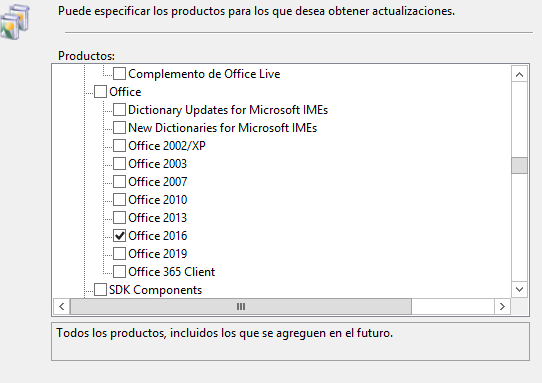
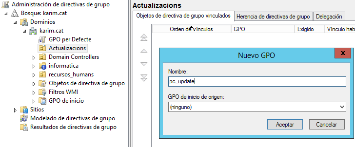

UF3 - Implantació de programari específic
Administració remota Windows Server 2012 R2
Escriptori remot amb Windows server2012 i Windows 8.1:
Primera opció:
1- Habilitem el servidor
El primer que cal és habilitar al servidor l'opció de permetre connexions remotes mitjançant sconfig.

-Accedim asconfigi seleccionem el número7, després seleccionem la lletrahper a habilitar l'escriptori remot i finalment seleccionem l'opció2per a que s'execute en qualsevol versió.2- Configurem l'usuari
I afegir després l'usuari al grup d'usuaris d'escriptori remot.
-Ara des del servidor afegim a l'usuarimireiaels grups d'escriptori remot i d'administrador.
Segona opció:
3- Clic dret a Equipo i habilitar el servei i afegir l'usuari. el resultat és el mateix que amb els punts 1 i 2.
Després:
4- Seguim configuran l'usuari
Per tal que l'usuari pugui iniciar sessió al servidor també ha de formar part del grup d'Administradors.
-comprovem que s'ha afegit el grup d'adminiistradors.5- Accedim a l'escriptori remot.
Llavors al client, només cal que vagis a escriptori remot, posis la IP del servidor i les credencials.
-Ara accedim aConxiona a escritorio remotoi afegim la IP/nom del servidor.

-A continuació ens demanara el nom d'usuari i la contrasenya de l'usuari en el qual volem accedir.
-I acceptem les credencials.

-Finalment ens connectem i ja podem administrar a distancia.
Administració remota amb RSAT
6- Configuració previa
El client ha de formar part del domini
-Ja hem completat aquest pas al apartat anterior.7- Configuració del client
Cal que siguis administrador de l'equip local per tal de poder fer les instal·lacions
-Comprovem que s'ha afegit el grup d'adminiistradors.8- Instal·lació de RSAT en un client.
Cal que et baixis el paquet corresponent RSAT segons la teva versió de servidor i segons la teva versió de client. En el meu cas, el servidor és un SERVER 2012 R2, per tant em cal un client Windows 8.1 almenys Pro i el paquet RSAT de 32 o 64 bits de la pàgina Microsoft.
-Ens vaixem el paquet deRSATde la pagina web per a la nostra versió de SO.9- Instal·lació del rol RSAT en un servidor.
Un cop instal·lat, cal anar a Administrador del servidor i afegir-lo.
-Afegim el rolHerramientas de administración de características.
-Deixem les opcions per defecte.

-Finalment deixem que s'instal·li completament.10- Comprovació del RSAT al client.
Ara ja es podrà accedir a Usuaris i equip del AD a través del client. El que podràs fer amb aquest usuari del domini vindrà condicionat pels privilegis del domini. Per exemple, si l'usuari és administrador local del client, però no administrador del domini, només podràs veure les entitats, però no crear-ne de noves ni eliminar-les.
-Comprovem que ja podem controla remotament l'administrador del servidor.

Administració remota amb Team Viewer
11- Explicació del Team Viewer.
Aquest tipus de programes no estableixen sessions, el que fan és connectar-te al servidor i mostrar directament la pantalla, és com si estesis treballant al servidor, però des de casa teva. Aquí cal anar amb compte, ja que a l'establir una connexió des de fora la xarxa interna, poden interceptar-la. El més adient seria mitjançant VPNs. Normalment aquest tipus de programes es fans ervir més aviat per a donar assistència tècnica.12- Instal·lació del Team Viewer a client i servidor Windows.
Prova el Team Viewer. Et caldrà instal·lar una part al servidor i l'altra al client.
-Per al client només fa falta descarga la versió del SO i instal·lar normalment.
-Per al primer cal habilitar la descarga i instal·lacio de.NET.

-Ara ja podem instal·lar el Team Viewer com al client.
-Per finaltizar demostrem que podem connectar des del client al servidor mitjançant la IP i la contrasenya amb el Team Viewer.
Servidor d'actualizacions
Preparem l'entorn per poder realitzar les actualizacions
Instal·lem un Windows server 2012 R2
1. Instal·la un Windows Server 2012 R2Donem un nom i una IP fixa al servidor
2. Comprova nom i ip de la màquina
Instal·lem un domini
3. Instal·la un domini
Desactivem el firewwall
4. Desactiva firewall
Afegim un disc dur de 10GB i dóna-li format
5. Afegeix un segon disc de 10GB i dóna-li format (serà el lloc on emmagatzemarem les actualitzacions)
Instal·lem Windows 8.1 i l'activem
6. Instal·la un Windows i activa'l (és necessari que estigui activat per a poder actualitzar-lo)

Unim el client windows al domini
7. Uneix-lo al domini
Instal·lem office al client
8. Instal·la un office al client
El servidor WSUS
-
Instal·la el rol de Windows Server Update Services deixant paràmetres per defecte. Quan et pregunti a quin lloc vols emmagatzemar les actualitzacions, recorda de dir-li el 2n disc que has afegit anteriorment (per exemple: F:)
Instal·lem el rol de WSUS.
-
Un cop instal·lat accedeix a Herramientas/Windows Server Update Services
Ara accedim a la configuració del WSUS.
-
En la primera configuració cal escollir:
Ara seleccionem les següents opcións tal com ens aniran sortint.
a. Es sincronitzarà des de Microsoft Update
b. No proxy
c. Iniciem la connexió (pot tardar un ratet)
d. Español
e. He escollit uns quants pensant amb la màquina Windows 7 i amb l'office 2007, però tu hauràs d'escollir segons la versió dell client que hagis unit al domini i segons quin office hagis instal·lat

f. Totes les classificacions
g. Automàticament
h. Iniciem sincronització inicial (al ser el primer cop tarda bastant en descarregar totes les actualitzacions)

-
Torna a Herramientas /Windows Server Service Updates
Ara accedim a la configuració del WSUS.
-
Paciència en la descàrrega de les actualitzacions, fes captura on es vegi com es descarreguen i com s'han descarregat
Actualització dels clients
- Al server ves al menú de Windows Update dintre de ferramentes administratives
- Al menú de sincronitzacions t’han d’aparèixer totes les que has fet (COMPTE: són les sincronitzacions que ha fet el server per a descarregar-se paquets, NO les dels equips)
Comprovem les actualizacions que hem fet.
- Al menú equipos, tens equipos sin asignar i has de crear un altre grup, posa-li també el nom de maquines. Fes cli dret damunt de Todos los equipos i dis-li d'afegir un nou grup d'equips, al qual li posaràs de nom Equips
Afegim un nou grup el qual l'hi direm
Equips. - MOLT IMPORTANT: si no aprobes les actualitzacions, aquesta NO s’instal·laran en els equips client). Aproba-les totes mitjançant el menú Actualizacions/Todas las actualizaciones.
Aprobem les actualizacions.
- Ara ves al menú opciones:
a. Aprobaciones automáticas. Configura una regla per tal que l'aprovació que has fet en el pas anterior sigui automàtic.
b. Asistente para limpieza del servidor. Llimpia totes aquelles actualitzacions que ja no calen.
c. Equipos. Has de marcar la segona opció, la que diu que asignarem els equips als grups a través de GPOs.
d. Mira les altres opcions
Completem les opcions indicades anteriorment i diem qie utilitze les directives de grup. - Tanca
Tanquem la finestra actual.
- Ves a usuaris i equips de l'AD i crea una nova UO anomenada maquines, la qual dinter ha de tenir l'equip validat al domini
Ara afegim una nova Unitat Organitzativa anomenada Actualizacions.
- Ves a les directives de grup
Anem a la directiva de grups.
- Clic dret a sobre la UO maquines que has creat abans, i crea una nova GPO que es digui “pc_update”
Creem una nova GPO anomenada
pc_update.  -
Clic dreta a sobre d’ella i editar
Ara anem a les opcions per editar-les.
-
Tot el que has de configurar sobre les actualitzacions ho trobaràs a Configuración de equipo/Directivas/Plantillas administrativas/ Componentes de Windows/Windows Update
a. Configurar actualizaciones autmáticas. Has d’escollir 4. Descargar actualizaciones automàticament e instalarlas en la programación especificada a continuación. Programa tots els dies, i escolleix una hora que puguis provar. (les 12.00, les 13.00).
Habilitem la plantilla de actualizacions automatiques i seleccionem l'opció4i editem l'hora.
b. Especificar la ubicación del servicio Microsoft Update en la intranet. Has de posar el nom de l’equip server. Per exemple: http://WINSERVERR2
Ara afegim el nom de lequiphttp://SERVER-KARIM:8530i l'hbilitem.
c. Habilitar destinatarios del lado del cliente. Has d’escriure el nom del grup al qual vols que vagin, és el nom que has posar al Windows Update, no als usuaris i equips del AD, el que passa és que l’hem fet coincidir. Equips.
Habilitemdestinatarios del lado del clientei indiquem el nom del grupEquips.
d. Volver a programar la instalación... Posa 1 minuts.
HabilitemVolver a programar la instalacióni indiquem 1 minut despera.
e. No reiniciar automàticament... Habilitala.
Habilitem el no reinici automatic. -
Tanca-ho tot.
Tanquem tot el que haviem obert.
-
Obre una consola i fes un gpupdate.
Executem gpugrade al powershell.
-
Ves al Windows client i reinicia la màquina.
Reiniciem la maquina client.
-
Anem a comprovar que hagi agafat bé les GPOs. Al Windows client ves al tauler de control i escriu Windows Update. Si mires la programació de les actualitzacions hauria de mostrar la que has configurat al server.
- Ara hauríem d’esperar per veure com fa l’actualització automàticament (si li has posat les 12.00 podria ser que tardés uns minutets més, a mi em va passar).
- Pots provar de dir-li que s’actualitzi en aquell moment.
Ja que no son les 12:00 iniciarem les actualitzacions en aquest moment.
- Un cop actualitzat el Windows client, al server, a la consola d’actualitzacions t’hauria de sortir dintre de equipos/maquines la maquina Windows client i dient les actualitzacions que s’han instal·lat, les que han donat error...
Ja podem comprovar l'estat de les actualitzacions en cada equip client.
Informes
-
Dintre del WSUS hi ha un apartat informes, clica en alguna opció. Què et diu?
Hem diu que s'ha dinstal·lar
Report Viewer Redistributable 2008. -
Instal·la la característica "Características de .NET Framework X" (és imprescindible per al següent pas)
Instal·lem el rol de
Características de .NET Framework X.
-
Instal·la el Report Viewer Redistributable 2008
Un cop instal·lat
Características de .NET Framework Xja podem instal·lar el Report Viewer R2008.
-
Torna a l'apartat informes del WSUS i mira'ls
Ja podem observa el informes individuals i generals de tots els euips.